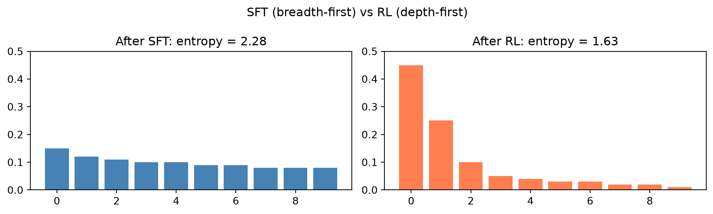

Nathanaël Fijalkow, CNRS, LaBRI, University of Bordeaux, NukkAI, Paris
Outline
Lifecycle of a Language Model
What is alignment?
Supervised Fine-Tuning (SFT)
RLHF and reward modeling
Direct Preference Optimization (DPO)
KTO (Kahneman-Tversky Optimization)
GRPO and reasoning models
Parameter-Efficient Fine-Tuning (LoRA)
0. Lifecycle of a Language Model
Three main phases:
Phase
Key idea
Pre-training
Next-token prediction on massive corpora
Post-training
Alignment with human preferences
Inference
Autoregressive generation, token by token
Pre-training
Train on a massive text corpus (hundreds of billions to trillions of tokens) using next-token prediction.
The model learns language structure, world knowledge, and reasoning patterns.
Requires significant compute (hundreds to thousands of GPU-days).
Produces a foundational model: a good text predictor, not yet a useful assistant.
Some statistics on model size
Model
Year
Parameters
Training tokens
GPT-2
2019
1.5B
~10B
GPT-3
2020
175B
300B
Llama 3 (largest)
2024
405B
15T
DeepSeek-V3
2024
671B (MoE)
14T
Llama 4 Maverick
2025
400B (MoE)
22T
Post-training
Turn the foundational model into a useful assistant:
Supervised fine-tuning (SFT): train on curated instruction-response pairs.
Preference optimization (RLHF, DPO, …): use human preferences to shape outputs.
Post-training is far cheaper than pre-training.
1. What is Alignment?
A foundational model completes text. Ask it “What is the capital of France?” and it might reply:
“…is a question often posed on French geography quizzes. The answer, of course, depends on the era…”
It is not trying to help you. It is predicting the most likely continuation of text it has seen before.
The alignment problem
Three failure modes of a foundational model:
Failure
Example
Unhelpful
Continues a question instead of answering it
Harmful
Produces instructions for dangerous activities if prompted
Dishonest
Confidently generates false information (“hallucination”)
Alignment means training the model to be Helpful, Harmless, and Honest (Anthropic’s “3 H’s”).
Chat templates
Aligned models are fine-tuned to understand a structured conversation format. Every provider defines one:
<|im_start|>system
You are a helpful assistant.
<|im_end|>
<|im_start|>user
What is the capital of France?
<|im_end|>
<|im_start|>assistant
The capital of France is Paris.
<|im_end|>
This is the ChatML format (used by Qwen, SmolLM, …).
Each model has its own chat template, for instance LLaMA uses [INST]...[/INST]. The format matters: sending input in the wrong template gives garbage outputs.
Applying a chat template in code
tokenizer = AutoTokenizer.from_pretrained("HuggingFaceTB/SmolLM2-135M-Instruct")messages = [ {"role": "system", "content": "You are a helpful assistant."}, {"role": "user", "content": "What is the capital of France?"},]prompt = tokenizer.apply_chat_template( messages, tokenize=False, # return a string, not token ids add_generation_prompt=True# add the opening <|im_start|>assistant token)print(prompt)
<|im_start|>system
You are a helpful assistant.<|im_end|>
<|im_start|>user
What is the capital of France?<|im_end|>
<|im_start|>assistant
The model then continues from the assistant marker.
2. Supervised Fine-Tuning (SFT)
Training on high-quality, curated (prompt, response) pairs.
The model learns: given this conversation, predict these response tokens.
Loss masking: compute cross-entropy only on response tokens: prompt tokens are ignored.
Limitation: the model learns to mimic, it doesn’t learn to rank or compare answers.
Loss masking
tokenizer = AutoTokenizer.from_pretrained("gpt2")tokenizer.pad_token = tokenizer.eos_tokenprompt ="What is the capital of France?"response ="The capital of France is Paris."prompt_ids = tokenizer.encode(prompt)response_ids = tokenizer.encode(" "+ response)full_ids = prompt_ids + response_ids# -100 tells PyTorch to ignore this position in the cross-entropy losslabels = [-100] *len(prompt_ids) + response_idsfor i, (tok_id, label) inenumerate(zip(full_ids, labels)): tok = tokenizer.decode([tok_id]) status ="MASKED"if label ==-100else"TRAIN"print(f" [{i:2d}] {tok!r:20s}{status}")
With a reward model r_\phi(x, y) in hand, we want to fine-tune the LLM to generate high-reward outputs.
This is a reinforcement learning problem:
RL concept
In this context
Policy\pi_\theta
The language model being trained
State
Prompt + tokens generated so far
Action
Sampling the next token
Reward
r_\phi(x, y), given at the end of the full response (sparse)
The model generates a complete response (a sequence of actions), then receives a single reward at the end.
The reference model
Maximizing reward alone is dangerous: the model learns to exploit the reward model.
Solution: maintain a reference model\pi_\text{ref}, a frozen copy of the SFT model, and add a penalty for diverging from it.
The reference model is never updated during RL training.
It acts as an anchor ensuring the policy stays close to the original SFT behaviour.
Without it, the model finds adversarial outputs that score high on r_\phi but are nonsense (“reward hacking”).
PPO: the RL step
After training the reward model, use PPO (Proximal Policy Optimization) to fine-tune the LLM:
Maximize \mathbb{E}_{y \sim \pi_\theta(\cdot|x)}\bigl[r_\phi(x, y)\bigr], while staying close to the reference model.
The KL penalty prevents the model from drifting too far: \text{objective} = r_\phi(x, y) - \beta \cdot \text{KL}[\pi_\theta(\cdot|x) \| \pi_\text{ref}(\cdot|x)]
KL divergence
For two probability distributions P and Q over the same space: \text{KL}(P \| Q) = \mathbb{E}_{x \sim P}\!\left[\log \frac{P(x)}{Q(x)}\right] = \sum_x P(x) \log \frac{P(x)}{Q(x)}
Key properties:
Non-negative: \text{KL}(P \| Q) \geq 0, with equality iff P = Q.
Asymmetric: \text{KL}(P \| Q) \neq \text{KL}(Q \| P) in general.
Measures how much “surprise” you get observing samples from P when you expected Q.
Here, \text{KL}[\pi_\theta(\cdot|x) \| \pi_\text{ref}(\cdot|x)] measures how far the trained policy has drifted from the reference model. Keeping it small prevents reward hacking.
The KL penalty in practice
The full KL divergence \text{KL}[\pi_\theta(\cdot|x) \| \pi_\text{ref}(\cdot|x)] sums over all possible responses: intractable for a large vocabulary.
Token-level approximation. Since both models are autoregressive: \pi(y \mid x) = \prod_{t=1}^T \pi(y_t \mid y_{<t}, x)
the log-ratio of the policy to the reference along a sampled responsey = (y_1, \ldots, y_T) factorises into a sum:
This is a per-token difference of log-probabilities: cheap to compute by running both models on the same sequence.
Issues with RLHF
PPO requires four models in memory simultaneously:
Policy: the LLM being trained
Value model: estimates expected future reward (same size as policy!)
Reference model: frozen copy of the original SFT model
Reward model: evaluates quality
For a 70B model, this is ~4 × 140 GB ≈ 560 GB of GPU memory. Extremely expensive.
Reward hacking
A fundamental problem: the model learns to maximize the reward model score, not actual quality. Known failure modes:
Failure mode
What happens
Length hacking
Generates very long responses: reward models often prefer verbose text
Sycophancy
Agrees with the user rather than being correct
Formatting tricks
Adds bullet points, headers, etc. even when unhelpful
Adversarial gibberish
Rare tokens that trick the reward model
The reward model is an approximation of human preferences. Optimizing it too hard breaks the approximation.
RLAIF: AI feedback instead of human feedback
Constitutional AI (Anthropic, 2022): replace human labelers with another AI.
Write a constitution: a list of principles (e.g. “Do not assist with harmful activities”).
Use a large model to generate critiques and revisions of responses according to the constitution.
Train a reward model on AI-labeled preferences.
RL as usual.
Benefits: scales to millions of comparisons; consistent; cheap.
Used in Claude models. The “AI” feedback can be from a much larger, more capable model.
4. Direct Preference Optimization (DPO)
Key insight: the optimal policy under RLHF can be derived in closed form: we don’t need to train a reward model separately!
The DPO insight
The KL-penalised objective has a closed-form optimal policy: \pi^*(y \mid x) = \frac{\pi_\text{ref}(y \mid x)\, e^{r(x,y)/\beta}}{Z(x)}, \qquad Z(x) = \sum_y \pi_\text{ref}(y \mid x)\, e^{r(x,y)/\beta}
Z(x) is the partition function: the normalisation constant (summing over all completions y) that makes \pi^* a valid probability distribution. It depends only on the prompt x, not on any specific completion.
Inverting this gives the reward in terms of the policy: r^*(x, y) = \beta \log \frac{\pi^*(y|x)}{\pi_\text{ref}(y|x)} + \beta \log Z(x)
Plugging this into the Bradley-Terry loss, Z(x)cancels (same prompt for y_w and y_l), eliminating the reward model entirely.
Intuitively: increase the probability of the chosen response relative to the reference, and decrease the probability of the rejected response relative to the reference.
\beta controls how far \pi_\theta can deviate from \pi_\text{ref}. High \beta = stay close to SFT.
Only two models needed: policy and reference. No reward model, no value model.
5. KTO (Kahneman-Tversky Optimization)
In practice, pairwise comparisons are expensive to collect. KTO works with simple good / bad labels: no pairing required.
Inspired by Prospect Theory (Kahneman & Tversky):
Loss aversion: humans feel losses more strongly than equivalent gains.
Diminishing sensitivity: going from $10→$20 feels larger than $110→$120.
KTO loss
The KTO objective compares each completion to a reference levelz_\text{ref} (the average log-ratio):
Good outputs are rewarded when above average; bad outputs are penalized when above average.
How is z_\text{ref} computed? It is estimated per mini-batch as the mean log-ratio over other examples in the batch: z_\text{ref} = \mathbb{E}_{(x',y') \sim \mathcal{D}}\!\left[\log \frac{\pi_\theta(y' \mid x')}{\pi_\text{ref}(y' \mid x')}\right]
This measures the average policy deviation from the reference model.
6. GRPO and Reasoning Models
Chain-of-Thought (CoT): asking the model to reason step-by-step before answering significantly improves performance on hard tasks.
For tasks with verifiable answers (math, code, logic puzzles), we can evaluate the final answer automatically: no human or reward model needed.
If the answer is objectively right or wrong, we have a perfect reward signal.
Reinforcement learning with verifiable rewards
Two types of rewards:
Type
Source
Example
Correctness
Automated verifier
Is the final answer correct?
Format
Rule-based check
Is the answer boxed? Is the reasoning well-structured?
The reasoning process itself is never evaluated, only the final answer. The model is entirely free to reason in any way it finds useful, even in ways that are not interpretable to humans.
DeepSeek R1 (2025)
DeepSeek trained a reasoning model using RL with verifiable rewards on math and code problems. Emergent behaviors observed:
Self-reflection: the model spontaneously backtracks (“Wait, that’s wrong…”)
Longer chains of thought on harder problems
“Aha moments”: the model discovers a better strategy mid-reasoning
In R1-Zero (trained with RL from scratch, without any SFT warmup), the chain of thought is often not understandable to humans: the model may switch languages mid-reasoning, use cryptic shorthands, or produce a stream of tokens that leads to the correct answer without making any sense to humans.
GRPO (Group Relative Policy Optimization)
Introduced by DeepSeek (2024). Eliminates the expensive value model from PPO.
Given a prompt x:
Generate B answers y_1, \ldots, y_B (a group).
Score each with the verifier → rewards r_1, \ldots, r_B.
This turns absolute rewards into relative ones: the model learns what makes this group’s best answer better than the rest.
SFT vs RL: a fundamental difference

SFT learns a broad distribution by imitating diverse data.
RLsharpens the distribution toward high-reward outputs, reducing entropy.
7. Parameter-Efficient Fine-Tuning (LoRA)
Full fine-tuning updates all parameters. For a 70B model:
Weights: ~140 GB (in BF16)
Gradients: another ~140 GB
Adam optimizer states: another ~280 GB
Total: ~560 GB
LoRA (Low-Rank Adaptation)
The idea. Learn an adapter: a small set of additional parameters that are added to the foundational model. The foundational model weights are kept frozen (never updated); only the adapter is trained.
Instead of learning \Delta W \in \mathbb{R}^{d \times d}, decompose the adapter:
\Delta W = B A, \quad B \in \mathbb{R}^{d \times r},\ A \in \mathbb{R}^{r \times d}, \quad r \ll d
Trainable parameters: 2dr instead of d^2.
After training, the adapter can be merged back into the base weights (W \leftarrow W + \Delta W) at zero inference cost, or kept separate for easy swapping.